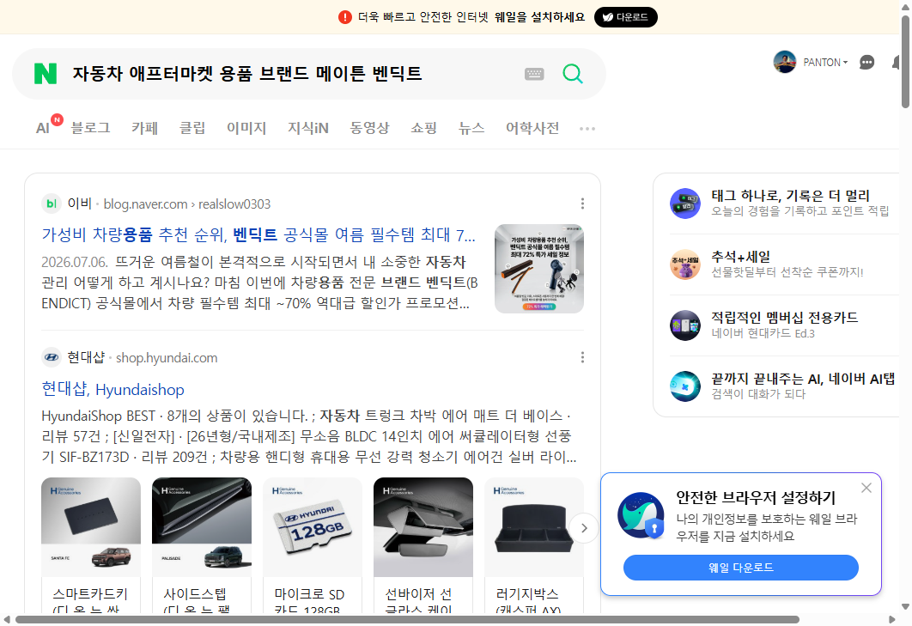
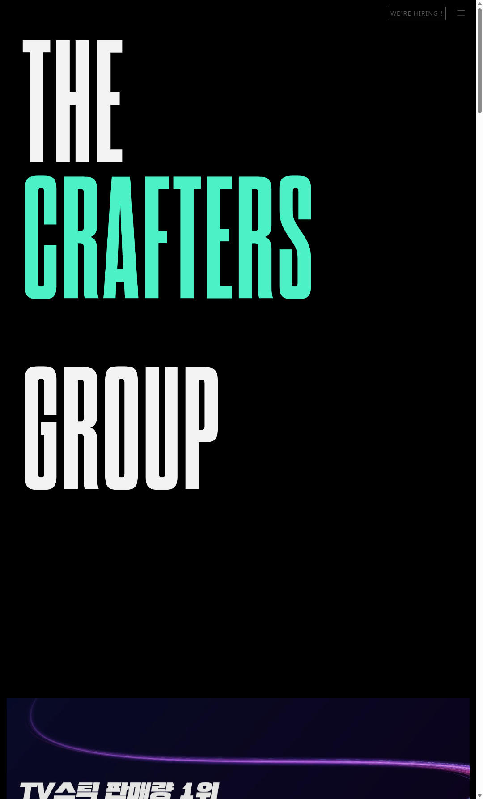
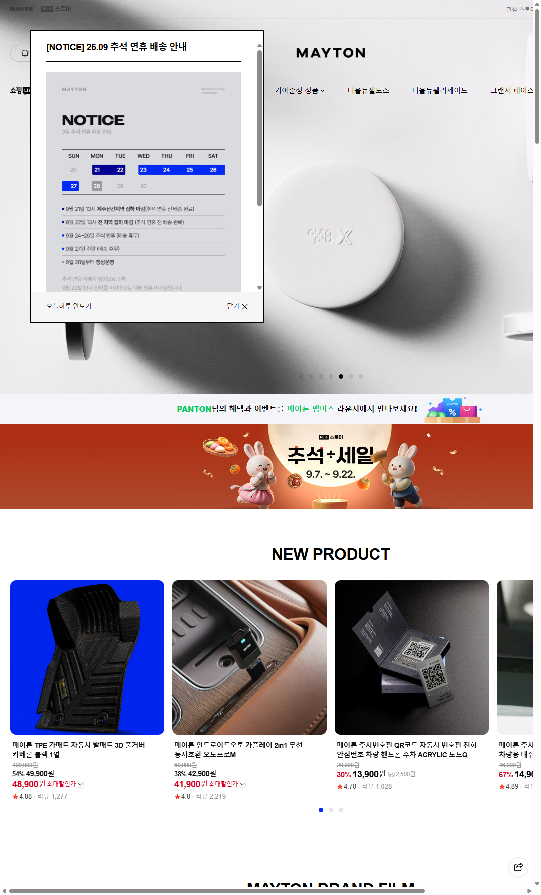
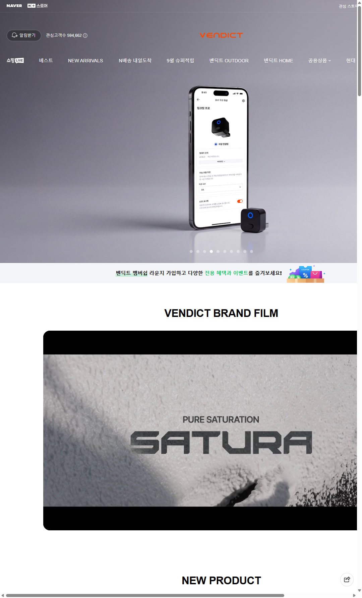
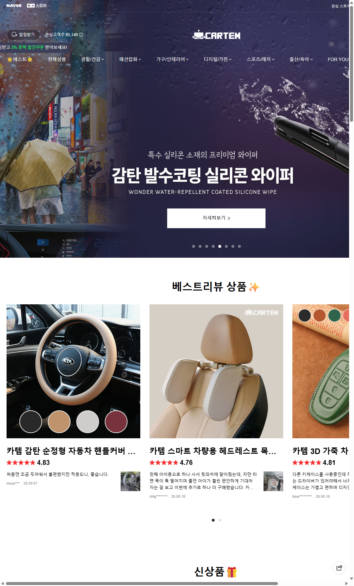
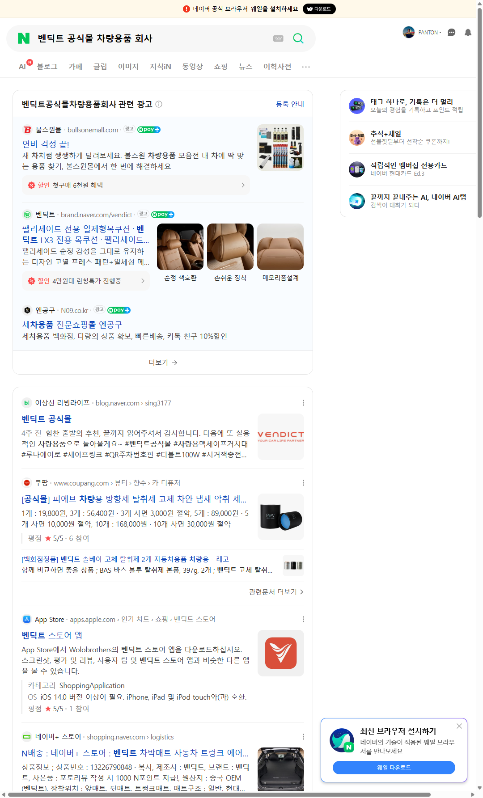
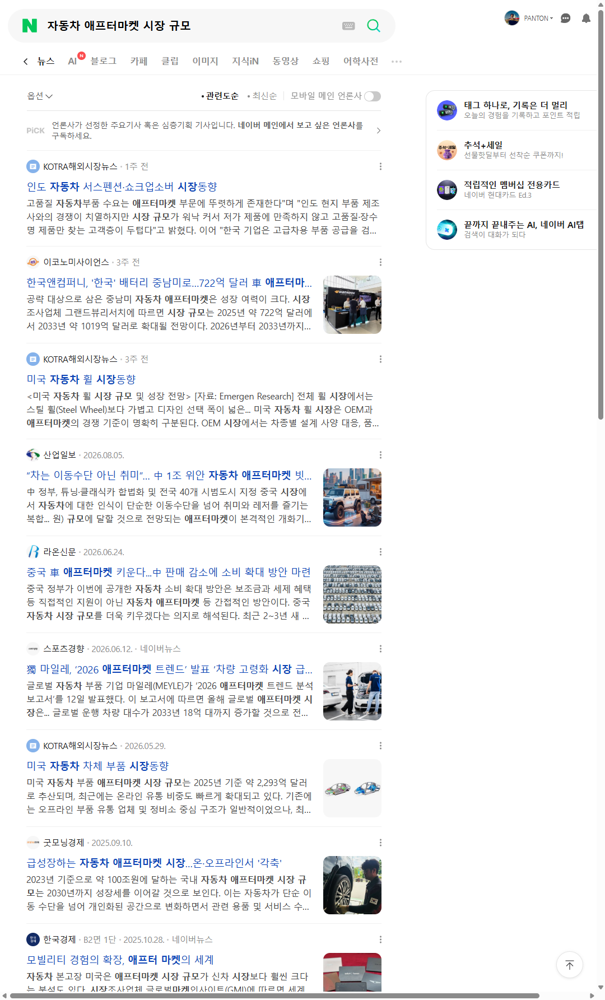

국내 자동차 애프터마켓은 2023년 기준 약 100조원 규모로 추산되며, 자동차가 이동수단에서 개인화된 공간으로 바뀌면서 용품·서비스 수요가 계속 늘고 있다. 이 중 온라인 D2C 차량용품 영역에서 이름이 오르내리는 3개 브랜드를 골라, 공식 기업 사이트와 네이버 브랜드스토어의 실측 데이터(관심고객수·리뷰수·가격·카테고리 구성)로 비교했다.
차종별 전용 금형 액세서리 + 카매트 + 무선 카플레이 동글. 기아 순정 정품관 운영. 신차 출시가 곧 신제품 트리거.
디자인·네이밍 중심의 감성 브랜딩. 세차/디테일링에서 아웃도어·홈까지 카테고리 확장. 상시 고할인 운영.
1만원 이하 범용 소품 다품종. 차종 구분 없음, 타 브랜드 상품 혼재. 사실상 셀렉션 유통형.
| 구분 | 메이튼 (MAYTON) | 벤딕트 (VENDICT) | 카템 (CARTEM) |
|---|---|---|---|
| 설립 / 이력 | 2018년 설립, 임직원 100여 명 규모 | 운영사 Wolobrothers (자체 앱 '벤딕트 스토어' 운영) | 공개된 기업 정보 없음 (스토어 단위 운영) |
| 소재지 | 인천 부평구 안남로 404 | 비공개 | 비공개 |
| 대표 / 사업자 | 김남수 / 299-88-00914 | — | — |
| 매출 (공개치) | 2023년 약 400억원 (자사 사이트 기재, DART 공시 근거) | 비공개 | 비공개 |
| 자체 채널 | 자사몰(mayton.store) · 기업사이트 · 브랜드스토어 | 자사몰 · 브랜드스토어 · 모바일 앱 · G마켓 브랜드샵 | 브랜드스토어 중심 |
| 완성차 제휴 | 기아 순정 정품관 운영 · 제네시스 부티크 입점 | 제네시스 부티크 입점 | 없음 |
| 사업 확장 | 라이프스타일 브랜드 '이내(INAE)' 별도 전개 | OUTDOOR / HOME 카테고리 자체 확장 | 생활·육아·패션잡화 등 잡화 확장 |
| 지표 | 메이튼 | 벤딕트 | 카템 |
|---|---|---|---|
| 관심고객수 | 490,565 | 594,662 | 65,140 |
| 최다 리뷰 상품 | 코일매트 확장형 56,869건 (4.75점) |
맥세이프 거치대 루나 에어로 23,645건 (4.90점) |
헤드레스트 목쿠션 4,359건 (4.76점) |
| 2~4위 리뷰 규모 | 8,688 / 6,371 / 6,341 | 21,213 / 14,011 / 13,921 | 4,306 / 3,241 / 2,349 |
| 가격 범위 | 3,500 ~ 230,000원 | 11,900 ~ 629,000원 | 2,400 ~ 29,800원 |
| 주력 가격대 | 3~7만원 | 3~16만원 | 0.5~3만원 |
| 표시 할인율 | 30~67% | 26~68% | 9~48% |
| 기본 배송비 | 2,500원 | 2,500원 | 3,000원 |
| 차종 전용 라인업 | 현대·기아·르노·KGM·쉐보레·해외차종 + 신차 전용관(팰리세이드 LX3, 셀토스 SP3, 그랜저 FL 등) |
현대·기아·제네시스·르노&KGM&쉐보레·해외차종 | 없음 (전 차종 공용) |
| 카테고리 구성 | 카매트 · 차종별 튜닝 액세서리 · 전장(오토프로 동글) | 카라이프 · 디테일링 · 아웃도어 · 홈 | 생활/건강 · 패션잡화 · 가구 · 디지털 · 출산/육아 |
| 타 브랜드 상품 혼재 | 없음 | 없음 | 있음 (루엘디·로베르타·캠핑 장작 등) |
※ 리뷰수는 조회 시점의 대표 상품 기준이며, 스토어 전체 누적 판매량과는 다르다. 관심고객수는 네이버 브랜드스토어 '알림받기' 기준 수치다.
| 구분 | 강점 | 약점 / 리스크 |
|---|---|---|
| 메이튼 | 차종 전용 금형이 곧 진입장벽. "디올뉴팰리세이드 악세사리" 같은 차종+용품 검색 키워드를 선점. 기아 순정 정품관으로 신뢰도를 완성차가 대신 보증. 3사 중 유일하게 매출 규모 공개. | 신차 출시 사이클에 매출이 종속. 차종이 단종되면 해당 SKU 재고가 사장. 전장(동글) 라인은 평점 4.70~4.75로 3사 대표 상품 중 가장 낮아 품질 편차 존재. |
| 벤딕트 | 관심고객수 1위(59.5만). 리뷰 1만건 이상 상품을 5개 이상 보유해 히트작이 한 품목에 쏠리지 않음. 아웃도어·홈 확장으로 '차량용품' 카테고리 천장을 우회. | 상시 50~68% 할인 구조 — 정가 신뢰도 훼손과 마진 압박이 동시에 걸림. 원산지가 중국 OEM이라 제조 차별화보다 기획·브랜딩 의존도가 높음. |
| 카템 | 2,400원부터 시작하는 낮은 진입 가격. 차종 무관 범용 설계로 재고 회전이 단순. 육아·생활 등 인접 수요를 함께 흡수. | 2강 대비 관심고객수가 7.5~9배 열세. 타 브랜드 상품이 섞여 브랜드 정체성이 흐려짐. 배송비도 500원 비싸 가성비 소구가 상쇄됨. 모방 난이도 최하. |
이 시장은 흔히 말하는 '3강'이 아니라 2강 1중이다. 관심고객수 기준으로 벤딕트(59.5만)와 메이튼(49.1만)은 같은 체급이지만 카템(6.5만)은 8분의 1 수준이고, 무엇보다 카템은 타 브랜드 상품을 함께 파는 셀렉션 유통에 가까워 제조 기반의 두 회사와 같은 선에 놓기 어렵다.
세 기준으로 보면 답이 갈린다. 모방 난이도와 검색 키워드 선점에서는 메이튼이 앞선다. 차종 전용 금형은 후발주자가 돈과 시간을 들여야 따라올 수 있고, "디올뉴팰리세이드 악세사리"라는 검색어는 그 차가 팔리는 한 계속 수요를 만들며, 기아 순정 정품관은 신생 브랜드가 살 수 없는 신뢰를 빌려준다. 반면 채널 종속도에서는 벤딕트가 낫다. 자체 앱과 G마켓 브랜드샵, 아웃도어·홈으로의 카테고리 확장은 네이버 알고리즘이 바뀌어도 버틸 완충재다.
내가 이 시장에 진입하거나 한 곳에 붙는다면 메이튼 모델을 택하겠다. 차량용품은 결국 "내 차에 맞느냐"가 구매 결정의 8할이고, 그 정합성은 브랜딩으로 대체되지 않기 때문이다. 다만 메이튼의 최대 약점인 신차 사이클 종속은 벤딕트가 증명한 방식 — 차종과 무관한 라이프스타일 카테고리를 하나 붙여 두는 것 — 으로 헤지해야 한다. 실제로 메이튼도 '이내(INAE)'를 별도 전개하며 같은 결론에 도달한 것으로 보인다. 반대로 카템 포지션은 권하지 않는다. 2,400원짜리 범용 소품은 오늘 팔려도, 내일 똑같은 상품이 500원 싸게 올라오면 그대로 무너진다.
AI 에이전트가 직접 브라우저를 열어 아래 순서로 순회하며 데이터를 수집했다.






